![20120724 - 7-24-2012 The More We Learn - quote from David Rockfeller -_thumb[2]](../assets/images/20120724---7-24-2012-the.jpeg)


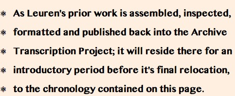
Cosmography by Claudius Ptolemy, an astronomer, geographer, mathematician and astrologer who lived from 90 -168 AD http://www.theeuropeanlibrary.org/confluence/download/attachments/8880494/31255889+%281%29.jpgx
⚛ Radionuclide ReMobilization Abatement
⚛ ⚛ ⚛ New and Future Vaccines ⚛ ⚛ ⚛
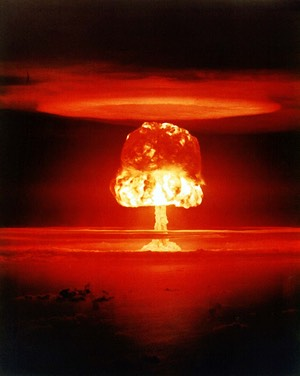
Clarke's Law (#4): For Every Expert, There Is An Equal And Opposite Expert.
Battis' Corollary: For Every Purpose A New Technology Is Developed, There Is An Equal And Opposite Purpose Available.
New and future vaccines – possible new developments
• New prophylactic and therapeutic vaccines will prevent and
potentially cure a wide range of diseases by stimulating immune
mechanisms.
• Advances in vaccinology will provide an efficient way to produce long-lasting protective immunity.
• Vaccines against non-infectious diseases are being trialled and
will provide alternative treatments for conditions such as allergies,
cancer, Alzheimer’s, diabetes, other autoimmune conditions and
addictions.
• Advances in DNA vaccines will allow rapid development of vaccines against potential agents for biological warfare.
• New delivery technology will provide easier routes of delivery,
such as nasal, transcutaneous and oral, without compromising efficacy.
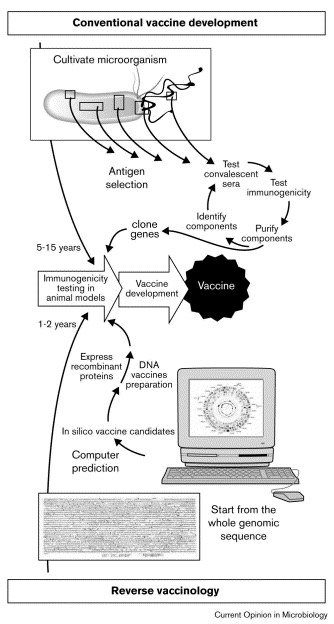
Schematic representation of the essential steps of vaccine development by the conventional approach and by reverse vaccinology. Rino Rappuoli Current Opinion in Microbiology, Volume 3, Issue 5, 1 October 2000, Pages 445-450
New Vaccines against infectious and non-infectious diseases.
There
are many vaccines for both infectious diseases and non-infectious
diseases that are either undergoing licensure or are in advanced
clinical trials. This list is dynamic as products move from early trials
through to phase 3 trials and then await licensure for release onto the
market. Diseases for which vaccines already exist are also subject to
new vaccine technologies and there are better vaccines emerging for
these. Below are some examples of emerging vaccines - some are already
becoming available.
Enteric infections:
• Enterotoxigenic E. Coli (ETEC). Several approaches including recombinant, live attenuated, edible.
• Rotavirus – now available
• Shigella – live attenuated and conjugated vaccines are in trials
Herpes virus infections
• Live attenuated, recombinant subunits, peptides and purified DNA all show promise.
• Cytomegalovirus – live attenuated and subunit.
• Varicella Zoster – preventing zoster in the elderly has been demonstrated.
• Epstein Barr virus – subunit and live recombinant vectors.
HIV
• Many approaches including DNA are in clinical trials.
Parasitic and tropical infections
• Malaria – DNA vaccines are showing promise.
• Shistosomiasis – subunit and DNA candidates.
Respiratory Infections
• Group A Streptococci – recombinant subunit, several options are in trials.
• Group B Streptococci – Conjugates
• Meningococcal disease – vaccines targeting all pathogenic strains are in trials.
• Respiratory syncytial virus – subunit vaccines are in clinical trials. Live attenuated are also possible.
Sexually transmitted diseases
• Genital herpes – subunit and live attenuated are in trials.
• Human Papillomavirus (HPV) – Recombinant polypeptide now available.
New Technologies:
Perhaps the approach that is generating the most interest and excitement is the technique of injecting engineered DNA sequences from infectious organisms against which protection is desired. Once delivered into the host, the carrier organism (and hence the inserted DNA) undergoes limited replication, the protein of interest is produced and the host develops an immune response against the protein. Naked DNA has also been used in trials with some success. Target organisms currently include: HIV, Helicobacter pylori, mucosal candidiasis, herpes viruses, and Human Papalloma Virus (HPV). Hepatits B is looking very promising and human clinical trials have taken place.
Advances in genomics enabled rapid progress to be made in vaccine development, which until now involved painstaking trial and error. Candidates showing promise include: S.pneumoniae, influenza and meningococcus (all strains).
Reverse Genetics (or Reverse Vaccinology):
By
knowing the genetic code of an organism it is possible to extrapolate
the codes for all genes and therefore the proteins that they code for.
Some of these will include peptides with antigenic properties. For
example, this technique is being applied in the development of a
meningococcal vaccine that would be protective against all strains. The
search for a vaccine against all strains of this disease has been going
for 40 years with little success. The main reason for failure has been
the sequence and antigenic variability of the antigens which have been
identified during this period using conventional methods. Recently the
genome for Nesseria meningitidis was sequenced.
• In
reverse vaccinology the genome sequence can be fed into a computer,
which can predict the proteins located in the bacterium’s surface.
• Using this method for meningococcal there were 600 predicted proteins identified in silico (computational biology).
• Of these, 350 were successfully expressed in E.coli as fusion products, purified and used to immunise mice.
• There were 91 novel surface proteins identified, 29 of these
induced bactericidal antibodies – a prediction of a good vaccine
candidate.
• Prior to this, only 12-15 had been identified and only 4 –5 of these had bactericidal properties.
• Vaccine candidates are in clinical trials.
Advantages in reverse vaccinology
• Fast access to virtually every antigen
• Non-cultivable organisms can be approached – the whole organism does not need to be grown to produce antigens
• Non-abundant antigens can be identified – less common antigens which may be immunogenic can be identified.
• Antigens not expressed in vitro can be identified.
• Non-structural proteins can be used
Disadvantages
• Non-proteinous antigens, like polysaccharides and glycolipids, cannot be used.
This technology is currently also being applied to vaccines for pandemic influenza.
DNA vaccines
With DNA vaccines, the subject is not injected with the actual antigen but with DNA encoding the antigen. This usually involves isolating one or more genes from a disease-causing agent with known antigenic properties and splicing those genes into plasmids (which are closed rings of self replicating DNA.) The rings are then delivered into small groups of cells, often by injection into muscle cells or by propulsion into the skin via a so-called gene gun. The plasmid is taken up by the host’s cells, transcribed and expressed. The body now produces the foreign antigen.
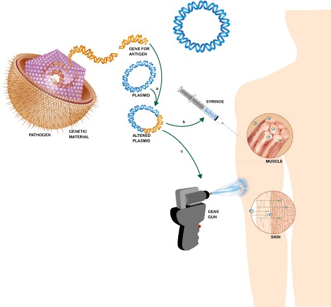
• Successes in clinical trials in terms of safety and immunogenicity with DNA vaccines include hepatitis B and malaria.
• Difficulties include identifying the antigenic peptides, the
potential to develop autoimmune responses and selection of viral
vectors.
• The DNA vaccine can be injected into a muscle just as conventional vaccines are.
• DNA vaccines elicit a broad cell-mediated, as well as antibody-mediated immune responses.
Scientific American: Feature Article: Genetic Vaccines: July 1999
New vaccines against non-infectious diseases
• When correctly targeted, an immune response can be used to
eliminate cells with pathological behavior such as dysplasia and
malignancy. Alternatively, immune responses can reduce inflammation
affecting a specific organ, such as in diabetes. Two of the most
promising areas in this regard are vaccines against cancer and
autoimmune diseases.
• One of the most promising treatments for cancers lies in the potential of vaccines.
• There are many approaches to cancer vaccine development, but all
must overcome the uniqueness of every cancer and therefore often must be
tailor-made to the patient. Some vaccines will use the tumor’s own
antigens to stimulate the immune system into attacking it (demonstrated
for melanoma), while others will work with the immune system, enhancing
its tumor killing capabilities.
• Vaccines have also been developed as potential therapeutic agents against nicotine and cocaine addictions.
Vaccines against biological weapons
Of
increased interest recently is the potential of human destruction by
biological weapons of mass destruction. Vaccines are likely to be the
only practical means of protection. Second generation vaccines against
anthrax, smallpox and plague are being developed as are vaccines against
hemorrhagic fever viruses. The absence of a financially viable market
for these vaccines is an impediment to their development, as are
regulatory and logistical obstacles to conducting human trials.
New vaccine-delivery technology
Most
currently recommended vaccines require parenteral administration and
many require a series of injections. Alternatives are being sought and
include transcutaneous vaccines, edible plants containing genes for
human vaccine antigens and controlled delivery depot systems.
Almost all
current vaccines are injected. Considerations include the availability
and cost of skilled labour to perform the injection, the cost of
producing injected vaccines, and the need for cold storage. However,
there are alternatives to injection as the means for vaccination;
mucosal immunization is one such option.
Mucosal/Edible Vaccines
• The mucosa is the boundary inside the body at which it primarily deals with its environment.
• Mucosa includes the conjunctival sac, the vaginal mucosa, the
rectal mucosa, the buccal and gastrointestinal mucosa, and the nasal
mucosa. To protect these surfaces, the mucosa-associated lymphoid
tissue is directly on site to provide defense. If the body comes in
contact with an antigen at any place on the mucosa, the antigen
stimulates these cells to produce an antibody response which is reported
to all other “associated mucous membranes.” These other “associated
mucous membranes” include the nasal-associated lymphoid tissue, the
bronchial-associated lymphoid tissue, and the
gastrointestinal-associated lymphoid tissue (GALT).
• Mucosal
vaccines expose a particular antigen to the mucosal surfaces thereby
allowing the immune system to produce specific antibodies against it.
• An important point about mucosal vaccines is the different
delivery strategies it offers. This is because mucosal vaccines need
not be injected; rather, edible material containing the vaccine would be
sufficient. If this edible material were part of the diet of many
people, then the administration of such vaccines would be much easier.
• With edible plant vaccine (EPV) technology, this is what many
scientists are working towards. EPV requires antigen expression in
transgenic plants and is then given by oral delivery.
• Food
vaccines are especially useful when the disease it prevents occurs in
the gut. As vaccine-containing food is broken down by the digestive
system, cells along the wall of the intestines are building up the
immune response. Theoretically, when the antigen is detected again,
antibodies will be available to attach to the antigen and destroy it.
• A number of different edible plant vaccines are currently under
development. The types of diseases targeted so far include travelers’
diarrhea, norwalk virus, and hepatitis B.
• So far, potatoes,
bananas and tomatoes have been used as vectors to deliver vaccine. Of
these,the banana is ideal because it is eaten raw, and is used commonly
in tropical areas of the world as a weaning food for children.
• Clinical trials have confirmed that these vaccines appear both safe and able to generate antibodies.
In
Epilogue, I would like to challenge the reader to imagine what misuse
and abhorrent purposes this technology can be put to? (-ed)
Source: http://www.influenza.org.nz/?t=919
Additional Info: http://www.influenza.org.nz/
😱
⚛ ⚛ ⚛ The Aerosol Application Of Vaccines and ⚛ ⚛ ⚛
⚛ ⚛ ⚛ The Global Depopulation Agenda ⚛ ⚛ ⚛

The misconception even today, of global overpopulation and the urgent need for depopulation, first appeared in the 17th century in a book called "Labyrinth of the World" -
"They were deliberating amongst themselves as to how they could give wings to Death so that it could, in a moment, penetrate everywhere, both near and far." John Amos Comenius, The Labyrinth of the World, 1623.
UN reports decline in population since the 1950's, from 2008 report.
Population change globally has been negative, since the end of nuclear bomb testing in 1963. The rate of change (slope of the curve) is similar for all regions, indicating a common cause. Environmental nuclear pollution as the cause, is indicated by a further decline in population and fertility with the introduction of each new nuclear technology: atmospheric testing (1952-63), nuclear power plants (1960’s-present), Chernobyl (1986), depleted uranium and exotic nuclear weapons (1990 to present), and the now emerging effects of the Fukushima disaster (2011) equivalent to at least 300 Chernobyl disasters. Source: UN Report: “World Population Prospects: The 2008 Revision – Highlights”, Fig. 2.

UN reports decline in fertility since the 1950's, from 2008 report.
This UN data indicates that global Fertility began a catastrophic decline following the Partial Test Ban Treaty (1963), that ended a decade of US/UK/Soviet atmospheric tests. The decline in fertility accelerated after Chernobyl (1986), and further declined with the introduction of depleted uranium and exotic nuclear weapons during the Iraq Wars (1990-2000). The genocidal and indiscriminate global impact of the 2011 Fukushima disaster, on global fertility and population numbers, is unknown, will be much greater than the known impact of previous nuclear pollution levels. Source: UN Report: “World Population Prospects: The 2008 Revision – Highlights”, Fig. 3.
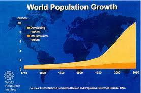
CONTRADICTORY WORLD POPULATION GROWTH ACCORDING TO WORLD RESOURCES INSTITUTE AND UN. (The Big Lie -ed)
The
World Resources Institute was established in 1982 to promote their
version of “sustainability”, and is funded by the World Bank and other
global banking institutions. Many foundations also provide funding, such
as the Rockefeller Foundation, Open Society Institute (George Soros),
and CIA linked foundations. Partnerships with Goldman-Sachs, Wal-Mart,
Wells Fargo Bank, wealthy individuals, and oil companies, provide
further funding. The Board of Directors includes the “global salesmen”
for the NWO agenda (such as Al Gore and nuclear energy). The World
Resources Institute clearly has a NWO agenda promoting overpopulation,
depopulation, nuclear power, climate change etc. that benefits the
interests of the global ruling elite. Source:World Resources Institute.
In
"The Impact of Science On Society" by Bertrand Russell, who some refer
to as the most dangerous man of the 20th century, it is clear from his
Oxford lectures in the 1930's that modern technologies and scientific
advances in the 20th Century have been misapplied in order to carry out,
for the ruling elite, a global depopulation agenda of many layers.
Contrived by City of London proponents, notably the financiers and
brothers Sir Jimmy and Teddy Goldsmith, this agenda to sterilize and
destroy most of humanity has been executed by fascist Princes Phillip of
England and Bernhard of the Netherlands through the World Wildlife
Fund, . . .
"If I were reincarnated I would wish to be returned
to earth as a killer virus to lower human population levels" Prince
Philip Duke of Edinburgh, leader of the World Wildlife Fund, quoted in
"Are You Ready for Our New Age Future?", Insiders Report, American
Policy Center, December 1995.
. . . with help from Wall Street
operatives Bill and Melinda Gates, Warren Buffett, Ted Turner and
others. The layers being developed and used to carry out their agenda
by politicians, the military, and corporations, include global nuclear
pollution from nuclear technologies, GMO food and pharmaceuticals,
nanotechnology, food stripped of nutrients, insect disease vectors, and
bio-organisms and agents introduced into the body in vaccines.
In
the news story below, it is clear that Australia and California are
two of the most targeted regions in the world, where layers of
depopulation agents are being forced on unwitting, and unhappy citizens
attempting to resist such death threats, covertly carried out by their
own governments. The New World Order is very much upon us, using
stealth methods such as forced vaccines, as we learn from this article,
are components of chemtrails; and introduced West Nile virus insect
disease vectors such as mosquitos in California.
Less than one
year ago, I attended Sonoma County, California official government
agency meetings, where, listening carefully, I confirmed that
depopulation (as in Australia) is being carried out by collaborative
Federal, State, and County agencies upon the good people of the state of
California, without informing them or asking for their consent.
-Leuren, Nov 22, 2013
Citations:
MY TALK AT THE KUALA LUMPUR WAR CRIMES CONFERENCE 2009:
“UN 2008 Report: Evidence of Global Decline in Population and Fertility”
BY LEUREN MORET September 20, 2009
http://www.scribd.com/doc/23525857/UN-2008-Report-Infertility-092809
UN REPORT:“World Population Prospects: The 2008 Revision – Highlights”
http://www.un.org/esa/population/publications/wpp2008/wpp2008_highlights.pdf
Graphs on changes in global population and fertility ---- UN contradictions in joint report with World Resources Institute
http://www.infiniteunknown.net/2012/02/24/interview-with-prof-dr-busby-and-leuren-moret-%E2%80%93-fallujah-fukushima-and-the-global-radiation-catastrophe-%E2%80%A6-exposing-worldwide-depopulation-and-genocide/
⚛ ⚛ ⚛
Australia Determined To Forcibly Vaccinate By Intentional and Controlled Release of Aerosolized GMO Vaccine
Nov 15, 2013 by DAVE MIHALOVIC
The
Office of the Gene Technology Regulator (OGTR) is on its way to approve
a licence application from PaxVax Australia (PaxVax) for the
intentional release of a GMO vaccine consisting of live bacteria into
the environment in Queensland, South Australia, Western Australia and
Victoria. According to the regulator, it qualifies as a limited and
controlled release under section 50A of the Gene Technology Act 2000
(the Act). PaxVax is seeking approval to conduct the clinical trial of a
genetically modified live bacterial vaccine against cholera. Once
underway the trial is expected to be completed within one year, with
trial sites selected from local government areas (LGAs) in Queensland,
South Australia, Victoria and Western Australia. PaxVax has proposed a
number of control measures they say will restrict the spread and
persistence of the GM vaccine and its introduced genetic material,
however there is always a possiblity of these restrictions failing and
infecting wildlife and ecosystems.
Aerial vaccines have used in the
United States directed towards animals by the use of plastic packets
dropped by planes or helicopters. Sanofi (who is one of the largest
vaccine manufacturers in the world) has subsidiary companies such as
Merial Limited who manufacture Raboral, an oral live-virus poisonous to
humans yet distributed wildlife in the masses.
WEST NILE VIRUS
SPRAYING
In 2006 Michael Greenwood wrote an article for the Yale School
of Public Health entitled, "Aerial Spraying Effectively Reduces
Incidence of West Nile Virus (WNV) in Humans." The article stated that
the incidence of human West Nile virus cases can be significantly
reduced through large scale aerial spraying that targets adult
mosquitoes, according to research by the Yale School of Public Health
and the California Department of Public Health.
Under the mandate for
aerial spraying for specific vectors that pose a threat to human health,
aerial vaccines known as DNA Vaccine Enhancements and Recombinant
Vaccine against WNV may be tested or used to "protect" the people from
vector infection exposures. DNA vaccine enhancements specifically use
Epstein-Barr viral capside's with multi human complement class II
activators to neutralize antibodies. The recombinant vaccines against
WNV use Rabbit Beta-globulin or the poly (A) signal of the SV40 virus.
In early studies of DNA vaccines it was found that the negative result
studies would go into the category of future developmental research
projects in gene therapy. During the studies of poly (A) signaling of
the SV40 for WNV vaccines, it was observed that WNV will lie dormant in
individuals who were exposed to chicken pox, thus upon exposure to WNV
aerial vaccines the potential for the release of chicken pox virus would
cause a greater risk to having adult onset Shingles.
- CALIFORNIA AERIAL SPRAYING for WNV and SV40
In
February 2009 to present date, aerial spraying for the WNV occurred in
major cities within the State of California. During spraying of Anaheim,
CA a Caucasian female (age 50) was exposed to heavy spraying, while
doing her daily exercise of walking several miles. Heavy helicopter
activity occurred for several days in this area. After spraying, she
experienced light headedness, nausea, muscle aches and increased low
back pain. She was evaluated for toxicological mechanisms that were
associated with pesticide exposure due to aerial spraying utilizing
advanced biological monitoring testing. The test results which included
protein band testing utilizing Protein Coupled Response (PCR) methods
were positive for KD-45. KD-45 is the protein band for SV-40 Simian
Green Monkey virus. Additional tests were performed for Epstein-Barr
virus capside and Cytomeglia virus which are used in bioengineering for
gene delivery systems through viral protein envelope and adenoviral
protein envelope technology. The individual was positive for both;
indicating a highly probable exposure to a DNA vaccination delivery
system through nasal inhalation.
Pentagon Document Revealed Aerial
Vaccination Plans
In the Quarterly FunVax Review in June, 2007, the
report lists the objective of a project listed as ID: 149AZ2 as a
preparation of a viral vector that will inhibit/decrease the expression
of a specific disruption gene (VMAT2) within a human population. It
further indicates in the abstract that six method of virus dispersal
were tested including high altitude release, water supply release,
insect transmission, and various methods of diffusion. Sources:
ogtr.gov.au
vactruth.com
cdc.gov
Dave
Mihalovic is a Naturopathic Doctor who specializes in vaccine research,
cancer prevention and a natural approach to treatment.
- Are Geoengineering Initiatives Being
- Used To Accelerate The Pandemic?

Populations Exposed to Environmental Uranium Have an Increased Risk of Reproductive Diseases Including Infertility, Cancer, and Reduced Viability in Offspring

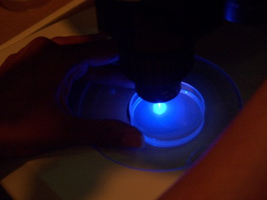
Decades of scientific research has established a causal relationship between kidney and respiratory diseases, expressed 25 years after the onset of Uranium and mining/milling activities, such as in the U.S. Southwestern Four Corners Region, including the Navajo Reservation.
The 2007 research paper below, by Raymond-Whish et al., establishes that Uranium also acts like estrogen, an effect known in other heavy metals such as Cadmium. Mice were exposed to Uranium in drinking water at levels [ranging from 0.5 μg/L (0.001 μM) to 28 mg/L (120 μM)] below the US EPA drinking water standard of 30 μg/L (0.126 μM). The exposed mice exhibited estrogenic responses including: “selective reduction of primary follicles, increased uterine weight, greater uterine luminal epithelial cell height, accelerated vaginal opening, and persistent presence of cornified vaginal cells.” The Uranium dose response was also strongly influenced by timing of the exposure.
This study establishes what has long been covered up - that Uranium is an endocrine-disrupting chemical in populations exposed to environmental uranium, increasing the risk of fertility problems and reproductive cancers. Experiments as early as 1947 were conducted by the US Army on the Pine Ridge Reservation, South Dakota, exposing Lakota villages to wind and water distribution of uranium yellow cake dust in sacks suspended from drop towers, and 50 gallon drums full of bullet holes on the ground marked “U.S. Army 1947”. -Leuren
⚛ ⚛ ⚛ ⚛
Populations Exposed to Environmental Uranium
Increased Risk of Infertility and Reproductive Cancers http://namastepublishing.co.uk/population-exposed-to-environmental-uranium/
_________________________________________________
Drinking Water with Uranium below the U.S. EPA Water Standard Causes Estrogen Receptor–Dependent Responses in Female Mice
Stefanie Raymond-Whish,1 Loretta P. Mayer,1 Tamara O’Neal,1 Alisyn Martinez,1 Marilee A. Sellers,1 Patricia J. Christian,2 Samuel L. Marion,2 Carlyle Begay,2 Catherine R. Propper,1 Patricia B. Hoyer,2 and Cheryl A. Dyer1
1Department of Biological Sciences, Northern Arizona University, Flagstaff, Arizona, USA; 2Department of Physiology, College of Medicine, University of Arizona, Tucson, Arizona, USA

Figure 1. Effects of UN at 0.5, 2.5, 12.5, or 60 μg/L (0.001, 0.005, 0.025, or 0.120 μM U, respectively) on dam follicle populations and in utero exposed pup ovary primordial follicles. B6C3F1 dams were exposed to control tap water or U in drinking water for 30 days before mating and through gestation. Ovaries from dams (A) and pups (B) were removed on the day of birth. Values shown are mean ± SE (n = 7–11). *Significantly different compared with controls (p < 0.05, ANOVA).
BACKGROUND:
The
deleterious impact of uranium on human health has been linked to its
radioactive and heavy metal–chemical properties. Decades of research has
defined the causal relationship between uranium mining/milling and
onset of kidney and respiratory diseases 25 years later.
OBJECTIVE:
We investigated the hypothesis that uranium, similar to other heavy metals such as cadmium, acts like estrogen.
METHODS:
In
several experiments, we exposed intact, ovariectomized, or pregnant
mice to depleted uranium in drinking water [ranging from 0.5 μg/L (0.001
μM) to 28 mg/L (120 μM).
RESULTS:
Mice that drank
uranium-containing water exhibited estrogenic responses including
selective reduction of primary follicles, increased uterine weight,
greater uterine luminal epithelial cell height, accelerated vaginal
opening, and persistent presence of cornified vaginal cells. Coincident
treatment with the antiestrogen ICI 182,780 blocked these responses to
uranium or the synthetic estrogen diethylstilbestrol. In addition, mouse
dams that drank uranium-containing water delivered grossly normal pups,
but they had significantly fewer primordial follicles than pups whose
dams drank control tap water.
CONCLUSIONS:
Because of the decades
of uranium mining/milling in the Colorado plateau in the Four Corners
region of the American Southwest, the uranium concentration and the
route of exposure used in these studies are environmentally relevant.
Our data support the conclusion that uranium is an endocrine-disrupting
chemical and populations exposed to environmental uranium should be
followed for increased risk of fertility problems and reproductive
cancers.
KEY WORDS:
depleted uranium, endocrine disruption, estrogen, estrogen receptor, female reproduction, heavy metal, Navajo reservation.
Environ Health Perspect 115:1711–1716 (2007). doi:10.1289/ehp.9910 available via http://dx.doi.org/
[Article: Vol 15, Num 12, Dec, 2007. "Uranium Mimics Estrogen" Environmental Health Perspectives, Raymond-Whish et al. :Online 14 September 2007] http://www.ncbi.nlm.nih.gov/pmc/articles/PMC2137136/pdf/ehp0115-001711.pdf
http://www.ncbi.nlm.nih.gov/pmc/articles/PMC2137136/pd
Fukushima Update: What Is The Level Of Danger Involved In Moving Spent Fuel Rods From Cooling Pools To Dry Cask Storage?
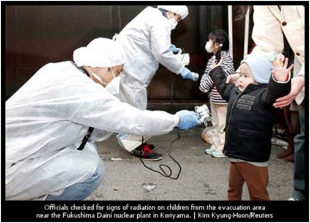
The
government of Japan has recently been under heavy pressure from the US
government, to remove the spent fuel rods from the leaking and damaged
cooling pools, located on the floors above the damaged nuclear
reactors. Not only are the reactors, reactor buildings, and the fuel
assemblages and rods damaged from the earthquake, tsunami, and fires
that followed but it has been reported recently, when fuel removal was
delayed, that some fuel assemblies had already been damaged as far back
as the 1980's by careless handling, and could not be removed.
There
is a far greater danger that has not been mentioned. The geometric
configuration of the fuel assemblies, or bundles of spent fuel rods,
stored in the cooling pools has been dangerously modified due to
accumulation of spent fuel rods over the operating life of the
reactors. Like many countries around the world, Japan has no central
storage facility to store spent nuclear fuel, so it has forced operators
to store the fuel onsite where it is generated. Because cooling pool
storage space is limited at every nuclear power plant, the increasing
numbers of fuel assemblies have forced operators to pack fuel assemblies
tighter and tighter into the pools, more tightly than they were
designed for, or is safe. The normal flow of cooling water has been
increasingly restricted - shaving off the margin of safety and causing
an immediate danger of overheating in the pools. Overheating would
cause boiling off of the cooling water, leaving the pools dry, and the
highly radioactive spent fuel rods in danger of ignitiging.
The
potential for another global nuclear disaster is very real if the spent
fuel rods are moved now in such a hap-hazard manner. Ironically, this
is the U.S. government forcing the Japanese government and TEPCO, to
enter into such a perilous undertaking. It's a foolhardy exercise that
immediately threatens the entire population of North America, as well as
the rest of the World. It would seem that the U.S. government is
pressuring Japan to genocide North America. The videos below document
the immediate danger of Fukushima today. -Leuren Moret
From
Christina (Rad Chick) - "One more thing you MUST see...the inside of
reactor 1. I posted the video on Chris Busby's page with this comment:
Hi
Dr Busby, I was just wondering what you thought of this latest video
from reactor 1, in particular the organic matter in the lower left view.
It looks like some type of mold, in the later views it appears to be
shedding material. It is very unusual, can you tell us what you think it
might be? and his comment was: Chris Busby No, I wouldn't know. It
could be organic, the kind of mold you get if you leave a chemical
solution in a bucket, but goodness knows. Fascinating video. You can see
the cracks and leaked material along the weld lines."
Video Taken by Surface Boat in Flooded Torus Room of Reactor1, Fukushima I NPP
From Leuren - OK Folks, now that you have seen the reality of Reactor 1 from a tour by boat through the flooded room... can you believe the U.S. NRC Chairman assuring us that 'everything is under control'?
How Removal of Fuel Assemblies from Fukushima Reactor 4 Spent Fuel Pool Will Be Done
Here is the reality of Reactor 4 and the planned removal of fuel assemblies in the near future - note the two cranes outdoors being used to remove the fuel rod assemblies from the pools inside the damaged building - did you see one of the cranes suddenly collapse (next vid -ed), while the workers using the second crane nearby did not even notice?
⚛ ⚛ ⚛
EXSKF website in Japan
Friday, November 15, 2013
Covering Fukushima I (Daiichi) Nuclear Accident Since March 11, 2011
According to NHK (11/15/2013), TEPCO will start removing the fuel assemblies from the Spent Fuel Pool of Reactor 4 at Fukushima I Nuclear Power Plant on Monday,
November 18. A construction crane in the repair array collapsing (1:35) as a huge frame is being moved in the foreground.
Additional Details: Ex-Skf.Blogspot: Fuel Assembly Removal to Start on November 18, 2013 From Fukushima I Nuke Plant Reactor 4 SFP
I met with TEPCO top officials on April 1, 2005, in northern Japan at Rokkasho, the opening day (it's the new reprocessing plant that has done nothing but have accidents and leaks). What a bunch of prevaricating orifices… remind me of the NRC and the entire global nuclear industry. Our lives and all of humanity's are swinging from those cranes. The likelihood of many, many, many, horrible accidents happening, that will have a global impact from moving those fuel assemblies over the coming years, is high. These videos tell us just how perilous it really is. -Leuren
⚛ ⚛ ⚛
ANGELS BLOW HORNS . . .
THEY DON'T PLAY HAARP

Ominous roll cloud caught on camera as it glides over Texas skies 'like a horizontal vortex'
• A roll cloud is a horizontal cloud formation that glides
relatively low to the ground, according to the National Oceanic and
Atmospheric Association
• In a rare instance, the roll cloud in Texas on Monday was not associated with a thunderstorm
• Truck driver Bonnie Mask had the day off so she decided to capture the event on camera in a captivating video
How Do You Gently Tell Him, No . . .?

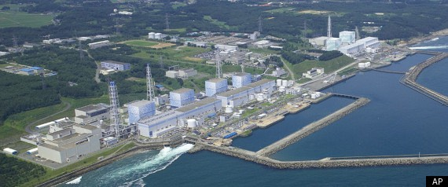
LEUREN MORET's PRESENTATIONS AND ARTICLES FORESHADOWING FUKUSHIMA: 2004 to 2008
“Japan's deadly game of nuclear roulette” - JAPAN TIMES, May 23, 2004
http://www.japantimes.co.jp/life/2004/05/23/to-be-sorted/japans-deadly-game-of-nuclear-roulette/
NIIGATA: "Radioactive Ocean Day: Japan earthquake hits world’s largest nuke plant” – SAN FRANCISCO BAY VIEW, July 18, 2007
http://www.celestialaffairs.com/SkyWatch/UNPREPAREDNESS/Japan%20Plays%20Deadly%20Game%20of%20Nuclear%20Roulette,%20Bayview.htm
"Populations Exposed To Environmental Uranium" - NAMASTE MAGAZINE, Vol 10, Issue 4, July, 2010
http://namastepublishing.co.uk/population-exposed-to-environmental-uranium/
"Global Implications Of Sellafield" - NAMASTE MAGAZINE, Vol 11, Issue 2, Jan, 2011
http://namastepublishing.co.uk/global-implications-of-sellafield/
_______________________________________________________________
FUKUSHIMA DISASTER UPDATES as of 08/18/11
INTERVIEWS WITH SCIENTIST LEUREN MORET AND ALFRED LABREMONT WEBRE
1. Scientist Leuren Moret: "Japan Earthquake And Nuclear 'Accident' Are Tectonic Nuclear Warfare" - March 20, 2011
http://www.examiner.com/exopolitics-in-seattle/scientist-japan-earthquake-nuke-accident-are-tectonic-nuclear-warfare
YouTube: Scientist Leuren Moret - Japan earthquake and nuclear "accident" are tectonic nuclear warfare.m4v [01:06:10]
2. Leuren Moret - "Japan Nuclear War Targets Us Canada Mexico And Hawaii" - March 27, 2011
http://www.examiner.com/exopolitics-in-seattle/scientist-u-s-canada-mexico-hawaii-targeted-nuclear-war-from-japan
YouTube: Leuren Moret - Japan nuclear war targets US Canada Mexico and Hawaii.m4v [01:00:00]
3. "USA BC Canada Under Radiation Threat As High As Japan" - April 6, 2011
http://www.examiner.com/exopolitics-in-seattle/coverup-california-northwest-b-c-canada-under-radiation-as-high-as-japan
http://exopolitics.blogs.com/breaking_news/2011/04/leuren-moret-coverup-california-northwest-usa-bc-canada-under-radiation-threat-as-high-as-japan.html
YouTube: http://youtu.be/2zL3M3kvgI0 [01:25:12]
4. "Northern 1/3 of Japan Uninhabitable And Should Be Evacuated" - April 7, 2011
http://all.gloria.tv/?media=143687 [01:00:42]
http://exopolitics.blogs.com/breaking_news/2011/04/leuren-moret-.html YouTube: Leuren Moret - Scientists declare northern one-third of Japan uninhabitable and should be evacuated [01:00:56]
"Japan Tsunami Fukushima Nuclear Disaster" - 1of2 - April 11, 2011 YouTube: Japan Tsunami Fukushima Nuclear Disaster 1/2 - Leuren Moret - PDX 9/11 Truth [01:09:26]
"Japan Tsunami Fukushima Nuclear Disaster" - 2of2 - April 12, 2011 YouTube: Japan Tsunami Fukushima Nuclear Disaster 2/2- Leuren Moret - PDX 9/11 Truth [01:54:15]
5. Scientist Leuren Moret - "Radiation War Intensifies With HAARP Tornadoes in USA" - April 19, 2011 http://www.examiner.com/exopolitics-in-seattle/scientist-leuren-moret-radiation-war-intensifies-with-haarp-tornadoes-usa
YouTube: Scientist Leuren Moret - Radiation war intensifies with HAARP tornadoes in USA.m4v [01:01:59]
6. Leuren Moret - "Fukushima HAARP Nuclear Attack by CIA, DOE, BP for London Banks" - May 9, 2011 http://www.examiner.com/exopolitics-in-seattle/leuren-moret-fukushima-haarp-nuclear-attack-by-cia-doe-bp-for-london-banks
YouTube: Leuren Moret - Fukushima HAARP nuclear attack by CIA, DOE, BP for London banks [01:05:13]
7. Leuren Moret - "Fukushima Tectonic Nuclear Warfare Monitored by World HAARP Partners" - May 21, 2011
http://www.examiner.com/exopolitics-in-seattle/leuren-moret-fukushima-tectonic-nuclear-warfare-monitored-by-world-partners YouTube: Leuren Moret - Fukushima tectonic nuclear warfare monitored by world HAARP partners [01:10:33]
8. Leuren Moret - "Fukushima Tectonic Warfare Exposes Haarp Money Trail, Sponsors, Partners, Bankers" - May 27, 2011 YouTube: Leuren Moret exposes Fukushima-HAARP bankers, partners, sponsors, money trail [01:17:05]
9. Leuren Moret - "Mega-Tsunami, Total Melt-Through, Radiation Levels And Illnesses" - June 13, 2011 http://www.examiner.com/exopolitics-in-seattle/leuren-moret-mega-tsunami-total-melt-through-radiation-levels-and-illnesses
YouTube: http://youtu.be/6L3BHnI1A_Y [01:01:48]
10. Leuren Moret - "Nuclear Genocide Of Babies And Children In Japan, US, Canada Grows" - Part 1 of 3 - July 17, 2007 http://www.examiner.com/exopolitics-in-seattle/leuren-moret-nuclear-genocide-of-babies-children-japan-u-s-canada-grows
YouTube: Leuren Moret - Nuclear genocide of babies and children in Japan, US, Canada grows - Part 1 of 3 [00:55:58]
11. Leuren Moret - "Fukushima Radiation Food Contamination Grows In Japan, US, Canada" - Part 2 of 3 - July 26, 2011 http://www.examiner.com/exopolitics-in-seattle/leuren-moret-fukushima-radiation-food-contamination-grows-japan-us-canada
YouTube: Leuren Moret - Fukushima radiation food contamination grows in Japan, U.S., Canada - Part 2 of 3 [00:48:06]
12.
Leuren Moret - "Japan, US, Canadian Governments Complicit In Covering
Up Fukushima Radiation" – Part 3 of 3 - August 15, 2011 http://www.examiner.com/exopolitics-in-seattle/leuren-moret-japan-u-s-canadian-governments-complicit-radiation-cover-up
YouTube: Leuren Moret: Japan, U.S., Canadian governments complicit in covering up Fukushima radiation [01:02:10]
13. Leuren Moret - "US Space Shuttle Covert Mission Was Chemtrails In Space For HAARP" – October 3, 2011 http://exopolitics.blogs.com/peaceinspace/2011/10/breaking-news-leuren-moret-us-space-shuttle-covert-mission-was-chemtrails-in-space-for-haarp.html YouTube: Leuren Moret - US Space shuttle covert mission was chemtrails in space for HAARP [01:23:21]
14. Leuren Moret: "100,000 Excess Deaths in 2011 in North America from Fukushima Radiation" – October 22, 2011 http://exopolitics.blogs.com/peaceinspace/2011/10/leuren-moret-100000-excess-deaths-in-north-america-in-2011-from-fukushima.html
YouTube: Leuren Moret: 100,000 excess deaths in 2011 in North America from Fukushima radiation [01:00:59]
RADIO INTERVIEW: "Catastrophic Effects of Radiation Contamination" - October 28, 2011Host Jim Fetzer on the “The Real Deal” interviews Leuren Moret on the Fukushima disaster Article with Images:
http://www.veteranstoday.com/2011/11/09/catastrophic-effects-of-radiation-contamination/
Audio File - Hour 1: http://radiofetzer.blogspot.com/ [Friday October 28. 2011] “Leuren Moret and Chris Busby”] Total time for Hour 1 and 2: [01:58:58]
RADIO
INTERVIEW: "New Bombs And War Crimes In Fallujah" – Oct. 28, 2011 Host
Jim Fetzer on, THE REAL DEAL, interviews Dr. Chris Busby and Leuren
MoretArticle with Images: http://www.veteranstoday.com/2011/11/03/new-bombs-and-war-crimes-in-fallujah/
Audio File: http://radiofetzer.blogspot.com/2011/10/leuren-moret-nicholas-busby.html Friday October 28. 2011 - Leuren Moret and Chris Busby - Total interview time for Hour 1 and 2: [01:58:58]

Source: Norwegian Institute for Air Research: NILU-i131_may12_usa.jpg
⚛ ⚛ ⚛ ⚛
Another Batch Of Wall Street Villains Freed On Technicality
MATT TAIBBI Rolling Stone DECEMBER 04, 2013
I love covering trials, which is one reason I've been a little sad since switching over to the Wall Street beat: Few of the bad guys in this world ever even get interviewed by the authorities, much less indicted, so trials are comically rare.
But we did have one last year ⚛ ⚛ ⚛
⚛ ⚛ ⚛ ⚛
⚛ ⚛ ⚛ ⚛
When you hear tales from Deep-Water Sailors about the Pacific Ocean being Dead . . . Well, You Know the Reason Why . . .
Fukushima Daiichi Cs 137 dispersion model from NOAA
⚛ ⚛ ⚛ ⚛
November 15, 2013
⚛ ⚛ ⚛ Kuala Lumpur War Crimes Tribunal Global Nuclear Coverup ⚛ ⚛ ⚛
Shortly after Malaysian Prime Minister Tun Dr. Mahathir left Office in late 2003, the Palestinians requested his aid in addressing the Occupation Issue. As one of the most respected World Leaders, and a Muslim, Tun Dr. Mahathir stood out as the only World Leader willing to render assistance. He began organizing International War Crimes Conferences that led to International War Crimes Tribunals. Infiltration and sabotage by U.N. operatives quickly subverted these Tribunals into another chapter of the Global Nuclear Coverup, despite Tun Dr. Mahathir's sincere efforts to expose the Atrocities committed against the Palestinians.

As an international radiation expert witness
and participant in 3 war crimes tribunals, and two of Tun Dr. Mahathir's
War Crimes Conferences (2007, 2009), I have provided information below
that may be useful in understanding the recent attacks by Francis A.
Boyle on the judges and parties involved in the Kuala Lumpur War Crimes
Tribunal for Palestine. Below are my comments, including an Op-Ed
statement by James Harrison, Co-founder of the North American
Intertribal Missions.
-Leuren Moret
THROUGHOUT
THE HISTORY OF FRANCIS A. BOYLE'S CAREER, WHICH HAS OFTEN FOCUSED ON
THE HUMAN RIGHTS OF INDIGENOUS PEOPLE, HE HAS BETRAYED AND UNDERMINED
THEIR LEGAL EFFORTS TO OBTAIN JUSTICE THROUGH THE COURTS (SEE ARTICLE
BELOW). HE HAS BETRAYED THE NATIVE AMERICANS, HAWAIIAN SOVEREIGNTY
MOVEMENT, AND NOW IN FACT... THE PALESTINE MOVEMENT AMONG MANY OTHERS.
FRANCIS
A. BOYLE SERVES AS A CONSULTANT TO THE "AMERICAN FRIENDS SERVICE
COMMITTEE", A FRAUDULENT AND ORGANIZED CRIME COMMITTEE, CLAIMING TO BE
ASSOCIATED WITH THE PACIFIST QUAKERS (KNOWN ALSO AS "FRIENDS"), BUT IN
FACT WAS SET UP AND FUNDED BY TWO JEWISH GANGSTERS IN PHILADELPHIA WHO
PROCEEDED TO USE THE COMMITTEE AND DIRTY MONEY TO ATTACK AND DESTROY THE
QUAKERS FOR THE PAST 60-70 YEARS. (FOR THOSE WHO ARE UNFAMILIAR WITH
THE QUAKERS, THEY ARE A PROTESTANT GROUP OF PACIFISTS ORIGINATING IN
FRANCE AND THE UK, WHO HISTORICALLY HAVE OPPOSED WAR BY REFUSING
MILITARY SERVICE, AND INSTEAD GO TO WAR ZONES TO ASSIST THE VICTIMS OF
WARS - ON BOTH SIDES OF THE CONFLICT. THEY WERE AWARDED THE NOBEL PEACE
PRIZE.)
AFTER 9/11, FRANCIS A. BOYLE CRITICIZED THE POLICIES OF
THE BUSH ADMINISTRATION AND "...also claimed that the Bush
administration "would welcome the outbreak of a Third World War" and "is
fully prepared to use tactical nuclear weapons against Muslim and Arab
states and peoples." (WIKI) IN FACT, THE US GOVERNMENT HAS HAD A POLICY
AND PRACTICE OF USING ON THE BATTLEFIELD 5 KT AND UNDER TACTICAL
NUCLEAR WEAPONS (SINCE ABOUT 1990), RADIOLOGICAL (DEPLETED URANIUM)
WEAPONS SINCE 1990 ON LEBANON, IRAQ, AFGHANISTAN, AS WELL AS EXOTIC
WEAPONS SUCH AS D.I.M.E. IN GAZA, LEBANON, YUGOSLAVIA, IRAQ, AND
AFGHANISTAN THAT CAUSE 100% TUMORGENESIS WITHIN 3 MONTHS AND 100% DEATH
WITHIN 9 MONTHS IN THOSE EXPOSED TO D.I.M.E. EXPLOSIONS. FRANCIS A.
BOYLE IN PARTNERSHIP WITH HANS VON SPONECK, DENNIS HALLIDAY, AND MICHEL
CHOSSUDOVSKY (ALL UN OPERATIVES AND AGENTS) HAVE CONSPIRED TO BLOCK ALL
EFFORTS TO CHARGE THE US GOVERNMENT WITH WAR CRIMES RELATED TO THE
INDISCRIMINATE AND GLOBAL EFFECTS FROM THE USE OF NUCLEAR, RADIOLOGICAL
AND EXOTIC WEAPONS IN THOSE COUNTRIES.
FRANCIS A. BOYLE IN
PARTNERSHIP WITH HANS VON SPONECK, DENNIS HALLIDAY, AND MICHEL
CHOSSUDOVSKY (ALL UN OPERATIVES AND AGENTS) HAVE CONSPIRED TO INFILTRATE
AND CONTROL CITIZEN ORGANIZED TRIBUNALS (SUCH AS THE ONE HELD IN
ANKARA, TURKEY FOR IRAQ), AND TO ELIMINATE CREDIBLE SCIENTIFIC AND OTHER
EXPERTS FROM PROVIDING SCIENTIFIC AND WELL DOCUMENTED EVIDENCE THAT
TACTICAL NUCLEAR AND RADIOLOGICAL WEAPONS WERE ILLEGALLY USED IN
COUNTRIES SINCE 1990, AS WELL AS EXOTIC WEAPONS SUCH AS D.I.M.E. THEY
HAVE ALSO CONSPIRED TO HIDE THE HORRENDOUS GLOBAL EFFECTS OF SUCH
WEAPONS WHICH ARE CAUSING A GLOBAL DECLINE IN POPULATION, FERTILITY, AND
AN EPIDEMIC OF INTERSEX (MALE AND FEMALE REPRODUCTIVE CELLS IN THE
REPRODUCTIVE TISSUES IN THE SAME ORGANISM) AND CONJOINED TWINNING, IN
ANIMALS AND HUMANS SINCE 1990.
FRANCIS A. BOYLE "has urged Iran
to sue the United States in the International Court of Justice in order
to discourage a military strike on Iran's nuclear facilities and prevent
the imposition of new sanctions by the U.N. Security Council", A MOOT
AND HYPOCRITICAL POINT, AND WHICH IS USELESS TO PURSUE, SINCE THE
WIDESPREAD CONTAMINATION OF IRAN FROM NUCLEAR MATERIALS USED ILLEGALLY
BY THE US AND THE UK IN IRAQ (SINCE 1990) AND AFGHANISTAN (SINCE 2001),
HAS RESULTED IN THE MOST EFFICIENT FORM OF NUCLEAR WAR, FROM HIGH
RADIOACTIVE RAINOUT THROUGHOUT IRAN, RESULTING IN SEVERE GENOCIDAL
BIOLOGICAL EFFECTS IN THE IRANIAN POPULATION - ALL SECRETLY MONITORED BY
THE UN. JUST TO MAKE THE AGENDA AND INTENDED GENOCIDAL CONSEQUENCES
VERY CLEAR - SINCE 2002 THE PEAK NUMBER OF US AND UK BOMBING RUNS IN
IRAQ AND AFGHANISTAN HAVE BEEN SYNCHRONIZED WITH THE MONSOON CYCLE TO
REACH MAXIMUM EFFICIENCY OF RAINOUT OF NUCLEAR MATERIALS ON IRAN FROM
WEST (IRAQ) AND EAST (AFGHANISTAN) OVER IRAN. FRANCIS A. BOYLE HAS
HYPOCRITICALLY RECOMMENDED TO IRAN AND OTHER GOVERNMENTS THAT THEY
SHOULD SUE THE UNITED STATES IN INTERNATIONAL COURTS, SUCH AS THE
INTERNATIONAL COURT OF JUSTICE, WHICH HAVE NO JURISDICTION OVER THE US
BECAUSE THE US IS NOT A SIGNATOR TO ANY OF THEM. THE ONLY COURT WHERE
THE US CAN BE TRIED FOR WAR CRIMES IS THE ORGANIZATION OF AMERICAN
STATES (OAS), AND WAS SUCCESSFULLY SUED THERE FOR WAR CRIMES IN GRANADA,
RESULTING IN THE US REBUILDING HOSPITALS IT HAD ILLEGALLY BOMBED WITH
DEPLETED URANIUM.
FRANCIS A. BOYLE Boyle "is a harsh critic of
Israel, Zionism, and American foreign policy towards Israel. In May
2008, Boyle offered to "represent Iran in an international tribunal for
trying the Zionist regime on charges of genocide of Palestinians"", WHEN
IN FACT ISRAEL HAS CARRIED OUT A POLICY OF CARPET BOMBING THE
GAZA-ISRAELI BORDER WITH DEPLETED URANIUM WEAPONS WHEN WINDS WERE
BLOWING FROM THE MEDITERRANEAN COAST TOWARDS ISRAEL, CARRYING HUGE
AMOUNTS OF FRESH AND CONCENTRATED DEPLETED URANIUM DUST AND SMOKE
DIRECTLY INTO ISRAEL (AWAY FROM GAZA!) REPEATEDLY EXPOSING THEIR OWN
POPULATION. THIS HAS RESULTED IN THE MOST PRECIPITOUS DROP IN SPERM
COUNT AND QUALITY (IN ISRAELI MEN) IN THE WORLD AS REPORTED BY FERTILITY
CLINICS AND SPERM BANKS IN ISRAEL. ISRAELI SOLDIERS HAVE BEEN WARNED
BEFORE GOING INTO WAR, THAT IF THEY WANT CHILDREN IN THE FUTURE, THEY
SHOULD MAKE DEPOSITS IN SPERM BANKS BEFORE ENTERING THE THEATER
OF CONFLICT. THE ISRAELI GOVERNMENT ALSO MOVED SETTLERS INTO THE AREAS
OF GAZA WITH THE HIGHEST RADIATION LEVELS FROM ISRAELI DUMPING OF
NUCLEAR TRASH IN GAZA, AND SENT SETTLERS TO THE LEBANON ISRAELI BORDER
TO THE NORTH AFTER THE ATTACK ON LEBANON, WHERE CARPET BOMBING WITH
DEPLETED URANIUM BUNKER BUSTERS INCLUDED 4TH GENERATION NUCLEAR WEAPONS
IN THE SAME BOMB, CAUSING A DIABETES EPIDEMIC IN SETTLERS CHILDREN
WITHIN 6 MONTHS. ISRAEL SHOULD BE CHARGED WITH WAR CRIMES NOT ONLY
AGAINST PALESTINE, BUT ALSO FOR DELIBERATELY DESTROYING THEIR OWN
POPULATION WITH NUCLEAR MATERIALS.
FRANCIS A. BOYLE, HANS
VON SPONECK, DENNIS HALLIDAY, AND MICHEL CHOSSUDOVSKY HAVE WORKED
TOGETHER AS PART OF A LARGER PATTERN OF INTERNATIONAL AUTHORITIES, OFTEN
WITH LINKS TO THE UN, IN CONCERT WITH LOCAL AUTHORITIES - WHO
INSTITUTIONALLY COMPROMISE THE INSTRUMENTS OF INVESTIGATION TO ENSURE NO
CONSEQUENCES FOR THE OFFENDING AGENCIES. FOR EXAMPLE, WITH REGARD TO
FUKUSHIMA, THE MOST RECENT AND SERIOUS NUCLEAR DISASTER IN THE HISTORY
OF HUMANITY:
The Mainichi, Nov. 11, 2013: NRA chairman blocks
interviews with Fukushima residents over exposure doses [...] NRA
Chairman Shunichi Tanaka intervened to limit such interviews to friendly
local government leaders, the Mainichi Shimbun has learned.
http://enenews.com/top-nuclear-official-blocks-interviews-with-people-over-fukushima-exposures-only-allowed-to-talk-to-friendly-govt-leaders-reuters-no-matter-how-hard-they-try-radiation-isnt-going-down
IN
THE TWENTIETH CENTURY, CIVILIAN POPULATIONS BECAME THE REAL TARGET OF
WARS AND A GLOBAL ZIONIST DEPOPULATION AGENDA. IT TURNS OUT THAT THE
ROCKEFELLERS, ROTHSCHILDS, AND QUEEN ELIZABETH, AS WELL AS
WINDSCALE/SELLAFIELD NUCLEAR DUMPING INTO THE IRISH SEA, IN THE UK, THE
GLOBAL USE OF DEPLETED URANIUM WEAPONS FROM CANADIAN URANIUM BELONGING
TO QUEEN ELIZABETH, AND THE US MILITARY AS THE DELIVERY SYSTEM, HAVE
BEEN MAJOR PLAYERS IN THAT AGENDA. THE UNIVERSITY OF CALIFORNIA, HOME
OF THE MANHATTAN PROJECT, WILL FOREVER BE KNOWN AS THE "UNIVERSITY THAT
POISONED THE WORLD", THE CEMENT OF MASSIVE CORRUPTION LINKING ALL
POLITICAL AND SCIENTIFIC ELITES ACROSS THE GLOBAL SPECTRUM.
IN
CONCLUSION, FRANCIS A. BOYLE'S ASSOCIATION WITH THE UNIVERSITY OF
ILLINOIS AT URBANA, EXPOSES HIS HIDDEN AGENDA AND TIES TO THE FINANCIAL
INTERESTS AND GENOCIDAL AGENDA OF THE ROCKEFELLERS: AGENTS OF THE QUEEN
OF ENGLAND AND THE CITY OF LONDON GLOBAL FINANCIERS. FRANCIS A. BOYLE'S
CLEVER REPUTATION THAT HE HAS CREATED AS A "CHAMPION OF VICTIMS" OF
COLONIALISM AND OTHER FORMS OF INJUSTICE, IS THE BEARD HE PLACES UPON
THE GENOCIDAL ZIONIST AGENDA THAT HE HAS SYSTEMATICALLY CARRIED OUT FOR
HIDDEN INTERESTS.
___________________________________
Wednesday, December 12th, 2012 | Posted by Veterans Today
“Francis A. Boyle— to the Hague” (Dissenting Op-Ed)
“Francis A. Boyle— to the Hague”
—
By James Harrison
Co-founder
North American Intertribal Missions
—
“The
world is a dangerous place; not because of those who would do evil; but
because of those who look on and do
nothing”. Albert Einstein
—
What
an absurd concept that Francis A. Boyle is a “hero” to anyone other
than Francis A. Boyle. A close review of his record will reveal that his
‘accomplishments’ have been at the best subjective, and his many
announcements of those ‘accomplishments’ have always either preceded or
shortly followed a ‘new book’ as the case here. See “Wikipedia”.
In
regards to his being an “advocate for Native America”—as he often
relates; we have not been able to find a single reference to his
“disavowal” of “U.S.C. Title 25, subtitled “Indians”; (an arrogant and
typically American misnomer) a blatant violation of the US
Constitution’s Article 6, “All treaties are supreme Law”. In reference
to that; our research has revealed more than twenty years ago after a
careful search of the more than 200 treaties with the USA and the Native
American tribes there is NOT ONE SINGLE REFERENCE to that body of
“illegal Federal Law” found in any of those treaties.
Indeed,
that volume of Federal Law” was not “introduced” until 1883 with the
‘first illegal act’; “The seven major Crimes Act”– almost twenty years
AFTER the last treaties were signed; making the ‘treaties’—null and
void—-or “abrogating them—–or in very simple speech: all of us who are
Native Americans born AFTER 1883 were ‘prisoners of war’ in our own
country. Those treaties were “delivered “to the Tribes” in
“Capitulation” BY the US Government as acts of “peace” ending decades of
bloody war from the illegal seizure of the Native American
“homelands”. The Native American People are still at war with the USA.
We
teach our children that the “Americans” “bought that land from the
French”—-who did not own it. Then they were not brave enough to invade
France—in “retaliation”; when they realized that “we” did not recognize
the “French ownership” of the territory which we had been fighting each
other over, for thousands of years; so they turned on us; and THEN could
not win either. It is a well known historical fact that the US
Government does NOT “make treaties with those they can defeat”. They
could not defeat us, even when they used germ warfare and weapons of
mass destruction——so they surrendered to us when they brought peace
treaties to us: then they “broke, violated, and dishonored them”. Dr.
Boyle would have at least “mentioned” “somewhere” his opposition to
“illegal, treaty violating legislation if he were an “advocate for
Native America”—–we will be most happy to retract this section if one of
his “many fans” will refer us to his “wise words on the subject”.
Dr.
Francis A. Boyle has “held himself up” (often, actually) as a “legal
expert” as “professor of Law” and an “advocate of due process” etc.
In reality, he has recently revealed through the “same process” that HE is guilty of
Obstruction
of Justice; in ‘his case’; Violation of USC Title 18 Chapter 73, with
multiple infractions, see below ‘*’; when he failed to file the proper
charges against the “FBI/CIA Agents” who, as he relayed in his story;
revealed their “on going conspiracy” when they “attempted” to “have him
betray the confidence/inform upon/against those of his Arab American or
Muslim American clients”.
This was a “conspiracy” by those Agents
to violate the “constitutional guarantees of due process” of their
fellow Americans; (they were not seeking information on foreign
nationals; foreign nationals are not subject to the same “constitutional
guarantees”) then they asked Dr. Boyle to assist them do the same to
‘His’ “fellow Americans”. When he failed to file the proper criminal
charges against those ‘Agents’ he “failed to act” in his capacity as an
“officer of the court; i.e. a Lawyer”—-THIS FAILURE TO ACT was a
violation of the law as well as his oath as an “officer of the court”
and a “member of the bar”. In his own lack of actions he has revealed
himself to be a fraud and a charlatan.
These crimes by the
‘Agents’ and Dr. Boyle were of the “Federal Level” as well as “Local”
since they were violations of the US Constitution which historically, to
those of us in Native America in reality and “practice” seems to be a
‘very’ ‘very’ convenient document for most of America. This reveals him
to be a charlatan and a fraud of international standing.
For the
“International Level of Crimes”—-there presently exists a large and
historical record that Dr. Boyle cannot deny being aware of. This
“compounded his crime,
“Obstruction”; by the following:
The very revelation that these requests by the ‘Agents’ was a common
plot, during a time of war makes their crime of “Conspiracy” to “violate
the constitutional guarantees of their fellow Americans” a direct
violation of International Law; i.e. Crimes Against Humanity and War
Crimes. “Dr. Boyles” own absence of action —was “Obstruction of
Justice” and in that; Crimes against Humanity, during a time of
War—making them “War Crimes” for which there ARE NO STATUTE OF
LIMITATIONS for Dr. Boyle or the “Agents”.
This is an important
point that the reader must understand. We intend to have these charges
answered, sooner or later; inThe Hagueor International Court of Justice.
That
the USA and its allies sat in judgment at the Nuremberg Tribunals I and
II just two generations ago convicting many former enemies, German,
Japanese and others; for War Criminals, and for the very same crimes
presented here. This is a blatant fact that not even the most
‘arrogantly and willfully ignorant American’ could deny. It is
impossible for any rational individual to perceive that the “famous” Dr.
Francis A Boyle would have not known these very facts; indeed, he is
“lauded” as a “professor of law” “most often by himself in writing”—–and
THEN he ‘sells books about it’.
We believe the evidence reveals
that Dr. Boyle is a War Criminal of the vilest manifestation since his
entire career was based upon the Law; and his cowardly violation of it
with his intentional inaction was most egregious. That the “Agents” ‘*’
were also guilty of the same crimes is another matter of fact that most
Americans seem to readily accept apparently as “normal” behavior for
“their” FBI; since the majority of their own Federal Officers are often
as corrupt as the criminals they are charged with investigating while
they use millions in US Tax money to investigate them.
The charges we are seeking to be filed against Dr. Francis A. Boyle are listed below. ‘*’
The
“Agents” charges would and should also be listed but their names and
those of their superiors are known only by themselves and Dr. Boyle.
Obviously Dr. Boyle is keeping those names secret for now. We contend
with the available evidence, widely published, with admissions from Dr,
Francis A. Boyle in writing and interviews which are available at
several forums; that he should be charged with the following:
Most
importantly since he has already publicly confessed in writing; he does
not warrant a trial but simply a sentencing hearing at the “Hague” for
his violations listed here.
(*) United States Code, Title 18, Chapter 73 with “specifications.” as well as the following
Section: 1505. Obstruction of Proceedings before departments, agencies, and committees.
‘Sec.’ :1510. Obstruction of Criminal Investigations, etc
‘Sec.’ :1511. Obstruction of Local or State Law enforcement (we
presume on university property but if not certainly a violation of
Illinois Statutes)
‘Sec.’ :1512 Tampering with a witness, victim, or informant
‘Sec.’ :1513 Retaliating against a witness, victim, or informant (the
‘Arab/Muslim American clients he “did not betray” were in essence
retaliated upon when he failed to file the charges allowing the “Agents”
to proceed with their conspiracy).
-2-
We have challenged Dr. Boyle to file “slander” or “defamation” charges against us.
Indeed,
being “warriors” we would gladly and with much enthusiasm meet him on
the “battle field of civilized combat”; in any of “his” nation’s corrupt
courts.
He could even write another book about it; if we are successful, it will be “written” from his prison cell.
As
for those of us who are Native Americans; remember this, our sisters
and brothers; “we” have been here in North Central and South “America”
for well over 15 thousand years. Long before the Chinese “called
themselves the Chinese”; before any of the “Great Civilizations”
invented themselves; long before the Jews, the Christians and the
Muslims invented their jealous and vindictive “God”, invented
themselves; then began killing each other by the thousands over their
jealous vindictive “God”. Long before “Mr. Columbus” “stumbled” upon
the “West Indies”. The “Americans” as well as the rest of the “world”
are simply a “mark on the wall of Native America’s own evolution”.
We were here long before any of them ‘invented’ themselves; will be here long after the rest of them kill each other off.
We
will remain. Each day that passes; theUSAhas a new chance to make the
necessary changes to become the “true leader” of the world, but only by
“example” of the “positive”.
Each day that passes theUSAreveals
that they do not have the integrity or the courage to make those
changes; each day that passes they slide deeper into the “pit” they have
“excavated” for themselves.
“If theUSAwere any other criminal nation the ‘Americans’ would invade the
USAto keep the world safe; and they would be justified”………..
For publications/announcements of Mr. Boyle’s revelations see:
[xxxxx(terms of service edit)]
A footnote to “all our relations”: (and for those of you who are not Native American)
Dr. Boyle reminds this author of the “cautionary tail” or story or myth (as you prefer)
Of
“Beautiful Snake”: The “young man/woman” in the forest is singled out
by speech by “Beautiful Snake” when it says to him/her “hello young one,
I need your assistance in a very important task.” To which the person
replies “oh I know of you, you are ‘Beautiful Snake’, and your speech
will mystify me, and you will lie to me and trick me, and bite me, and I
will die”. To which the snake replied “Oh but not YOU dear one, YOU are
special to me; and if you assist me I will reward you more handsomely
than you can even imagine”
“All I need is for you to pick me up,
and carry me across that very cold stream to the other side, once we
reach there I will reward you” and “this I promise you; never to harm
you but to reward you for not only your bravery, but your trust in me”.
The young person considers these words and in spite of all that they
have been told, they pick the snake up, and with great difficulty and
struggle reach the other side of the stream, and just as the snake is
lowered to the ground; it bites them on the hand. The young person
stumbles back in surprise and pain from the “Venom” and in great emotion
they proclaim to the snake; “but you lied to me, you tricked me, am I
going to die?” to which “Beautiful Snake” replies; “well yes you fool
you are going to die; but you knew what I was when you picked me up”.
As for ‘Dr. Boyle’;
“A lie travels half way around the world; while the truth is putting on its shoes”—
Mark Twain
_______________________________________________________________
⚛ ⚛ ⚛
Top
nuclear official blocks interviews with people over Fukushima
exposures; Only allowed to talk to “friendly” gov’t leaders — Reuters, “No matter how hard they try, radiation isn’t going down” -Resident
(VIDEO)
enenews.com ⚛ ⚛ ⚛
⚛ ⚛ ⚛ ⚛ Now Here's the News ⚛ ⚛ ⚛ ⚛
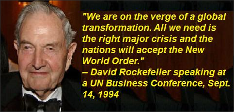
Guess Which Manufactured Crisis That Was? -Laurens
⚛ ⚛ ⚛ ⚛ ⚛ ⚛ ⚛ ⚛
⚛ ⚛ ⚛ The Politics of Radiation ⚛ ⚛ ⚛
⚛ ⚛ ⚛ ⚛ Trust Yourself ⚛ ⚛ ⚛ ⚛
"The CDC was started by the US military and the Atomic Energy Commission to hide the HORRIFIC health effects of ionizing radiation from the public. The EPA was also started by them to hide the HORRIFIC environmental effects of ionizing radiation from the public - and it was started even before the CDC. NIH, Natl. Cancer Institute etc. etc. were also started by them, and NCI is funded by corporations now. Your own geiger counter is what you can trust... forget how govt. agencies interpret."
- Leuren Moret
⚛ ⚛ ⚛ & Your Gamma Scout Geiger Counter ⚛ ⚛ ⚛
The Outcome of Fukushima's Radiation is Dependent Upon the Strength of the Human Spirit.
Populations Exposed to Environmental Uranium
Increased Risk of Infertility and Reproductive Cancers
July 5, 2008

By Leuren Moret
PART 1 OF 2
GUARDIANS AND CARETAKERS:
“The Navajos help guard the land for the Hopi. We don’t want them to leave. This is their sacred land, too. The White Man is the one who needs to leave before Nature intervenes. The Great Spirit made us caretakers of this land. We take care of it with our prayers and our ceremony. Now you poison it and rape it and destroy it with your strip mines and uranium tailings and power plants – all on sacred land! And you try to chase the last few Indians off so you can do your dirty work.” Thomas Banyacya, Hopi[1]
MARIN COUNTY: HIGHEST BREAST CANCER RATE IN THE US.
RIVERBANKS AND COASTLINES HAVE HIGHEST CANCER RATES
It is clear that dilution is not the solution to pollution. Dumping radioactive contaminated materials into bodies of water has a boomerang effect. It is not long before the ionizing radiation is washing back up on riverbanks and shorelines. In fact, in the first cancer mapping survey[2] in history (1850-60) in Cumbria, the Lake District of Britain, Alfred Haviland reported that out of 6000 cancer cases in a ten-year period, the highest cancer rates were along riverbanks and shorelines. This provided a strong environmental link to cancer, before manmade ionizing radiation was introduced into the environment after 1900. Today it is well known by geoscientists that most natural background radiation originates in minerals from rocks and in sediments which are rocks reduced to particles by sedimentary processes, and transported in water until they wash up on riverbanks and shorelines… where Haviland reported the highest pre-1900 cancer rates.
Pre-1900 cancer rates globally represent the true baseline for cancer studies. Here a comparison is made between pre-1900 cancer rates in Cumbria to 1963 Hawaii cancer rates at the peak of atmospheric testing. Because crustal or continental rocks are much higher in natural background ionizing radiation than oceanic volcanic rocks, pre-1900 Hawaii cancer rates should have been lower than pre-1900 Cumbria cancer rates. Unfortunately, Hawaii has some of the highest rainfall in the world, which very efficiently deposited atmospheric manmade radioactive pollution into the Hawaiian environment. According to a 1973 letter from the Atomic Energy Commission (AEC) to the science journal Nature,[3] Hawaii is the most radioactive contaminated place in the world from atmospheric testing and burned up spacecraft.
In Haviland’s pre-1900 survey, lung cancer was 0.17% of all cancers, but increased to 17.6% (103.7-fold increase) of all cancers reported[4] in Hawaii by 1963. The pre-1900 pancreatic cancer rate was 0.15%, which increased to 5.8% (38.6-fold) in Hawaii by 1963,[5] and increased 12-fold in Japanese males between 1945-1965 [Fig. 4].[6] Pre-1900 thyroid cancer in Cumbria was the rarest at 0.05%, and has increased rapidly on a global scale since 1945. The majority of cancers in the pre-1900 Cumbria survey were breast (23.73%), and uterine (20.42%), which made up 43.15% of all cancers. The greatest majority of cancers in 1963 in Hawaii were digestive system (41.1%)[7] and respiratory (20.4%)[8] which together made up 61.5% of total cancers. Breast cancer was only 5.2% of the total, although it too greatly increased after 1945, but formerly rare cancers had much greater increases. The enormous increase in respiratory and digestive system cancers indicates an environmental link – with the introduction of atmospheric testing fallout – inhaled and ingested globally by all living things.
THE JOURNAL OF ENVIRONMENTAL RADIOACTIVITY
The chance discovery of an abstract in the Journal of Environmental Radioactivity, “Radiocesium in North San Francisco Bay and Baja California coastal surface waters,”[9] provided me with an answer to a puzzling question about breast cancer. Hundreds of millions of dollars of US government money have been spent by the University of California to identify the cause of what may be the highest breast cancer rates[10] in the United States in Marin County [Fig. 1], California, just north of San Francisco.
Even more surprising, the radiocesium reported in the paper had been measured by the Lawrence Livermore Nuclear Weapons Lab (managed by the University of California), from the north end of San Francisco Bay to the coastal waters at the tip of Baja California, Mexico. By mapping the pattern of breast cancer in Marin County, I identified the San Francisco Bay shoreline of the Marin County peninsula as the environment where the highest rates of breast cancer occur in the county. The deepest part of San Francisco Bay is offshore from Marin, and the highest volume of radioactive contaminated sediment-laden water passes through this area each day with the tides. The sediment and water flow pattern in the north part of the bay is visible in the aerial photo in Fig.1.
Not only is San Francisco Bay contaminated with ionizing radiation from the Sierras, but it also is heavily contaminated with chemicals, ionizing radiation, and military waste from decommissioned military bases. Signs around the Bay shoreline warn pregnant women to eat nothing caught in the Bay, and “residents should eat no more than one fish a month” caught in the Bay. Little wonder the warning signs are posted since ionizing radiation and chemicals have a synergistic interaction, multiplying the effects of each other by many times.
The lowest breast cancer rates are along the Pacific coastline of Marin. The spatial distribution of breast cancer made it clear that there had to be an environmental cause. Large areas of mudflats and estuaries along the bay side shoreline of Marin, like the Cumbria and Welsh seacoasts, provide a low energy environment of quiet still water for radioactive contaminated fine sediments to settle out.

Above Fig.1. San Francisco Bay Area, with Marin County in upper left corner, north of San Francisco. Source: http://www.sfbayquakes.org/mapview/map_without_view.jpg

CONTAMINATION OF REGIONAL WATER SUPPLIES
Most of the fresh water coming into San Francisco Bay is from the Sierra Nevada Mountains east of the California coastline, a very high mountain range running north and south along the border with Nevada [Fig. 2]. The soils of the Sierras are now contaminated with radioactive materials from nuclear bomb testing, Chernobyl, and the emissions from the Rancho Seco nuclear power plant, which operated east of Sacramento until it was shut down in 1989 by a citizens lawsuit after a history of accidents, radioactive leaks, startups and shutdowns. The citizens lawsuit was successful because they owned the Sacramento municipal Power Company, including the nuclear power plant.[11] Most of the drinking water for the San Francisco Bay area comes from the Sierras. Approximately 95% of the radioactive emissions from Rancho Seco were rained and snowed out into the Sierra Nevada Mountains, contaminating vegetation, soils, streams, rivers and lakes.

Right - Fig.2 Map of California showing San Francisco Bay, Marin County north of San Francisco, and the Sierra Nevada Mountains to the east where radioactive contaminated water supplies orginate for northern California.
Source: Hornbeck, D., California Patterns: A Geographical and Historical Atlas. Mayfield Publ. Co, Palo Alto, CA (1983).p.11
Mortality from all diseases for all ages in San Francisco declined by about 10% within two years of the Rancho Seco shutdown,[12] just what the European Committee on Radiation Risk (ECRR) predicted in the new radiation risk model they wrote in 2003 as an independent report for the European Parliament.[13]
During the lawsuit, which eventually shut down Rancho Seco nuclear power plant in 1989, the citizens contracted with Lawrence Livermore nuclear weapons lab to measure fission product emissions in the Rancho Seco environment. I obtained the Livermore Lab radiation reports[14] and communications with lawyers, from Dr. Ernest J. Sternglass who had been an expert witness for the lawsuit. It was a surprise to discover that Livermore Nuclear weapons Lab has not only secretly conducted extensive global monitoring of ionizing radiation for decades, but local ionizing radiation monitoring as well. In fact, I saw fresh core samples from Hiroshima and Nagasaki lying on a table in a Livermore environmental laboratory in 1991. When I asked Dr. Kai Wong, a Livermore lab ionizing radiation expert, why they were still monitoring Hiroshima and Nagasaki, he said:
“Because Hiroshima and Nagasaki are still radioactive. And we are still studying the people because they are too.”
LIVERMORE NUKE LAB SECRETLY MEASURING
GLOBAL RADIATION LEVELS
In a recent study, Livermore Nuclear Weapons Lab reported [15] measuring one Curie of radiocesium per year, passing through San Francisco Bay, attached to fine sediment. Cesium 137 and Strontium 90 are the two most abundant fission products, and are commonly measured as an indicator of more than 400 other fission products produced. Therefore far more than one Curie of ionizing radiation per year has been washing through the Bay. Clay particles are highly charged and act as scavenging agents for radioactive particles suspended in water. This has been a chronic and cumulative source of low-level ionizing radiation washing up daily on the San Francisco Bay side of the Marin shoreline for at least 60 years – since atmospheric testing started in 1945, and the likely cause of the high rates of breast cancer reported in Marin County.
Based on 550 epidemiological studies of exposed populations, an independent low-level ionizing radiation report for the European Parliament, the European Committee on Radiation Risk (ECRR) report, has stated that chronic exposure to low-level ionizing radiation is:
“…up to 1000 times more biologically damaging than the International Committee on Radiation Protection (ICRP) standards and risk model predict.”[16]
The ICRP standards and risk model are based on the Hiroshima and Nagasaki Atomic Bomb studies, which were deceptively conducted by the U.S. Government, in order to protect the future development of a nuclear weapons program.
Even worse than the fission products, the public health impact from global pollution by depleted uranium, was not officially measured or reported from bomb testing, but someone must have been monitoring it. All atomic and hydrogen bombs have large amounts (thousands of pounds) of depleted uranium packed as “tamping” around the small plutonium core weighing less than 20 lbs.[17] The major contribution made by depleted uranium to global radioactive pollution from atmospheric testing was very rarely mentioned or reported.
THE DIABETES LINK TO RADIATION
Prior to the introduction of manmade ionizing radiation into the environment, diabetes was very rare. Most children who developed diabetes died by the time they were 7 years old, since insulin was not discovered until the late 1920s. This greatly minimized inheritance of a genetic link to diabetes. By globally mapping diabetes,[18] it was very clear to me that the highest rates of diabetes in the world are in the same latitudes as the major atmospheric tests. Jet stream distribution carried the radiation from east to west in the northern latitudes where the US, Russia, and China conducted tests. And in the southern latitudes where British and French bomb tests were conducted, the jet stream carried the radiation around the world, contaminating the tips of S. America and Africa. By 1963 at the peak of atmospheric testing, Dr. Ernest J. Sternglass reported a 50% decline in the North Atlantic fishing catch, and a 65% decline in the northern Pacific fishing catch, due to global nuclear fallout pollution of the oceans.[19]

Left - Fig. 3: Diabetes death rates in Japan 1950-2004. This represents the global cumulative radiation effects of atmospheric testing (1950-1963), nuclear power plants introduced in 1968, and depleted uranium introduced in 1991.
Source: Vital Statistics of Japan 2004 vol.1, Ministry of Health, Labour and Welfare, Health and Welfare Statistics Assoc., Table 5.15, p. 203.
A global diabetes epidemic [Fig. 3], beginning in 1945 with the bombing of Hiroshima and Nagasaki, has had a major contribution from the effects of uranium pollution from atmospheric testing, nuclear power plants, and depleted uranium weaponry introduced to the battlefield in 1991. Uranium is particularly damaging to the pancreas, insulin production, information flow, and cell function. And diabetes in pregnant women has a serious effect on the foetus.[38]

Right - Fig. 4: Trend of mortality rate from pancreatic cancer in Japan (Males) for the period 1940-1965 prior to, and following the release of fission products into the environment.”
Source: M. Segi, M. Kurihara, and T. Matsuyama, “Cancer Mortality in Japan (1899-1962)”, Department of Public Health, Tohoku University, Sendai, Japan, 1965.
Pancreatic cancer mortality in Japanese males [Fig. 4] increased 12-fold between 1945 and 1965, during the peak of atmospheric testing.[20]
A global diabetes epidemic [Fig. 3], beginning in 1945 with the bombing of Hiroshima and Nagasaki, has had a major contribution from the effects of uranium pollution from atmospheric testing, nuclear power plants, and depleted uranium weaponry introduced to the battlefield in 1991. Uranium is particularly damaging to the pancreas, insulin production, information flow, and cell function. And diabetes in pregnant women has a serious effect on the foetus.
Pancreatic cancer mortality in Japanese males [Fig. 4] increased 12-fold between 1945 and 1965, during the peak of atmospheric testing.[20]
MARIN COUNTY: A NATURAL CONTROL STUDY
The Marin County study is the kind of natural experiment geoscientists find useful in their research, with the Pacific coastline as a natural control and San Francisco Bay mudflats in Marin County as the study area. It is also a good comparison of the public health effects of ionizing radionuclide concentrations in contaminated freshwater compared to seawater. It is already well known that because of the influence of saltwater on uptake of radionuclides saltwater fish have much lower radioactive contamination levels than freshwater fish living in contaminated environments where toxins may bio-concentrate by thousands of times.
When the results of mud samples from the Marin County bay side shoreline and the Pacific coastline are analyzed and reported, low-level ionizing radiation from the Sierras will be identified as the cause of what may be the highest breast cancer incidence in the United States. High rates of autism also occur in areas, between the Sierras and Marin County, in low energy slow water environments where swampy still water and mudflats occur, and are recharged with contaminated water washing down from the Sierras. The California Department of Developmental Services (DDS) found a 273 percent increase in autism cases between 1987 and 1998.[21] This is due not only to residual ionizing radiation washing out of the Sierras, but also to the nuclear power industry in California. Dr. Ernest Sternglass has provided powerful evidence[22] that in the state of California, autism has increased and is correlated with the increase of energy generated by nuclear power plants since the early 1970’s. An investigation of U.S. autism rates and nuclear power plant operating capacity confirmed the California findings. Ionizing radiation in the environment has a cumulative effect, where increased levels have been reported in dairy products and soils such as in New York City, causing an increase in biological problems in exposed populations.[23]
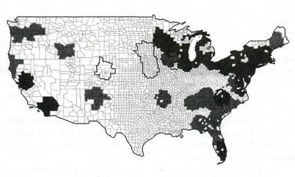
Above Fig. 5A: High-risk counties within 100 miles of nuclear reactors where 2/3 of breast cancer deaths occurred 1985-1989.

Above Fig. 5B: Nuclear power plant locations in the U.S.
Source: 5(A) J. Gould, The Enemy Within: The High Cost of Living Near Nuclear Reactors, Four Walls Eight Windows, NY/London (1996), p.187.
5(B) Source: “The Madness of Nuclear Energy”, The Ecologist, Vol. 29 No. 7, November 1999, back cover.
I’M THE “MOUSE LADY”
The University of California, as the unchallenged manager for 61 years of the nuclear weapons program at Los Alamos National Lab, Lawrence Livermore Lab, and Lawrence Berkeley Lab, has received billions of dollars to make a global radioactive environmental mess, hundreds of millions of dollars more to “study” the breast cancer clusters in Marin County, and has still failed to identify the cause. The “platinum plated” labs have so much sophisticated equipment and personnel to study ionizing radiation that they are, as one Livermore scientist said, a “solution looking for a problem.” Yet, during a breast cancer conference on January 21, 2006, by the Bay Area Breast Cancer and Environmental Research Center (BABCERC), University of California scientist Dr. Mary Helen Barcellos-Hoff from the Lawrence Berkeley Lab, introduced herself as “the mouse lady”. She stated very clearly, during her presentation to 600 women, that “radiation is the only known cause of breast cancer in mice.”[24] She repeatedly mentioned in her talk that “Radiation is the only known cause of breast cancer in mice and that is why I use it to cause breast cancer in mice.” She concluded her talk, by saying that in their research they “never identified the cause of breast cancer in women”.
No, but hundreds of millions of dollars later, they sure did in mice… ionizing radiation.
THE MOUSE THAT ROARED
When it was time for questions, I held up an enlarged breast cancer map [Fig. 5A] using US Government data (1985-1989) from the Centers for Disease Control (CDC). The map identified that within a 100-mile radius of nuclear power plants and nuclear weapons labs, [Fig. 5B] two thirds of all breast cancer deaths occurred in the United States from 1985-89.
I asked the speaker, Dr. Mary Helen Barcellos-Hoff, if BABCERC was investigating ionizing radiation as a cause of breast cancer around these sites. She quickly replied, “Oh, I’m a microbiologist!” distancing herself from the “R” word.
Above Fig. 6: Kokopelli is a fertility deity, an ancient humpbacked flute player from an Anasazi glyph. He presides over childbirth, agriculture, and reproduction of game animals, and is venerated by Southwestern Indians.
Source: Walker, D., Cuckoo for Kokopelli, Northland Pub. Flagstaff AZ (1998), p.3-Pottery by Melissa Antonio, Acoma Pueblo, New Mexico, p.1-Navajo basket by Eleanor Rock, Twin Rocks Trading Post, New Mexico.
KOKOPELLI SPEAKS
Living on the Navajo Reservation heavily contaminated from uranium mining, a young Navajo girl when she was nine, lost her grandmother, her ama’sa’ni, to breast cancer.[25] Her mother later had breast cancer twice. When Stefanie Raymond-Whish decided to become a molecular biologist at the University of Northern Arizona, she dedicated her research to finding the root causes of breast cancer.
LOOD DOO NADZIIHII – “THE SORE THAT DOES NOT HEAL”
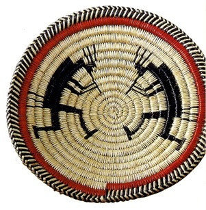
Raymond-Whish discovered that there was New Mexico State Tumor Registry data on the New Mexico portion of the Navajo Reservation, which showed a 17-fold increase in childhood reproductive cancers compared to the U.S. average.[26] Ms. Williams, the journalist who wrote “On Cancer’s Trail” about Raymond-Whish reported “These are extremely rare cancers related to hormone systems.”[27] Another set of registry data from 1970-1982 showed a 2.5-fold increase in these cancers among all New Mexico Native Americans.[28] A 1981 paper identified a possible link between proximity to uranium mine tailings and incidents of birth defects in families. Breast cancer [Fig. 7] is the number two killer of Navajo women after heart disease.[29] Uterine and ovarian cancers doubled or tripled since 1970 in New Mexico Indians, with no change in whites and Hispanics.[30] This has prompted the U.S. Health and Human Services to fund a study on kidney disease to be done jointly by a Navajo health agency and a New Mexico state agency. They will be looking at 1300 Navajos and 160 drinking wells, compiling illness data and analyses of drinking water contaminants (uranium, arsenic, etc.). With less than ¼ of the wells tested, the study has already established that living within 0.8 kilometer from an abandoned mine is a significant predictor of kidney disease and diabetes.[31] This suggests that local uranium pollution point sources are contaminating the groundwater on the Navajo reservation where many family dwellings have their own well. Municipal drinking water supplies, utilized by whites and Hispanics in more populated urban areas, may explain the reduced uterine cancer rates in non-Indian populations.

Left - Fig. 7 : A dividing breast cancer cell as seen through a colored scanning electron micrograph.
Source: Steve Gschmeissner/Science Photo Library. http://www.hcn.org/servlets/hcn.Article?article_id=17708
Dr. Ernest Sternglass has recommended that reverse osmosis filtration systems, for a cost to the U.S Government of about $500 per household, will remove heavy metals including uranium and other contaminants from water. He suggests that the U.S Government cost of providing these systems to contaminated Native American populations would be far cheaper than the public health studies and high health care costs of chronic exposure to uranium contamination.
Another Mouse Study and a Different Outcome
When Raymond-Whish received her PhD in May 2008, she had already co-published a groundbreaking paper[32] identifying uranium as an estrogen disruptor and a serious cause of infertility as well as breast, ovarian, and uterine cancer. She and researchers exposed mice to depleted uranium contaminated drinking water below the U.S. EPA water standard of [30] picoCuries/Liter [33] (or about 1 Bequerrel),[34] in other words at levels the U.S. government considered to be a minimal health risk. Their results: “Mice that drank uranium-containing water exhibited estrogenic responses including selective reduction of primary follicies, increased uterine weight, greater uterine luminal epithelial cell height, accelerated vaginal opening, and persistent presence of cornified vaginal cells. Coincident treatment with the antiestrogen ICI 182,780 blocked these responses to uranium or the synthetic estrogen diethylstilbestrol. In addition, mouse dams that drank uranium-containing water delivered grossly normal pups, but they had significantly fewer primordial follicies than pups whose dams drank control tap water.”[35]
Their Conclusions Were:
“Because of the decades of uranium mining/milling in the Colorado plateau in the Four Corners region of the American Southwest, the uranium concentration and the route of exposure used in these studies are environmentally relevant. Our data support the conclusion that uranium is an endocrine-disrupting chemical and populations exposed to environmental uranium should be followed for increased risk of fertility problems and reproductive cancers.”[36]
Andrea Gore, a neuroendocrinologist at the University of Texas, Austin, and former advisor to the National Science Foundation considers this to be a groundbreaking study:
“This is a science of subtlety, (Dyer’s and Raymond-Whish’s) work is consistent with other good labs. People criticize the field of endocrine disruption because we don’t always understand the mechanisms, but the effects are real. This is why animal studies are so important. The responses we see in lab animals can happen in humans, because we share the exact same hormones. The estrogen receptor is similar.”[37]

Fig. 8 (above): The start of every human life: Human ovulation where emergence of the oocyte from the ovary occurs before fertilization in the uterus.
Source: Geddes, L., “Human egg makes accidental debut on camera,” New Scientist, June 11, 2008.
A Global Depopulation Doomsday Machine
Since 1945, the University of California and the U.S. Nuclear Weapons Labs together with other nuclear states have blanketed Planet Earth and the global atmosphere with accumulating uranium and fission products with an unknown biological outcome. This is very significant because low level uranium contamination, even below EPA drinking water standards, is an estrogen or hormone disruptor at a minimum, which means it will have a global affect, and not just on females of many species. Raymond-Whist has identified some of the effects in one biological system (reproductive), which is a part of a larger cooperating set of systems in a human or animal super-system. Her research predicts that infertility will increase in each future generation because of chronic low-level ionizing radiation exposure, cancers of reproductive organs in females will increase, and the viability of future generations will decline.
The link between diabetes and uranium exposure is also significant to the reproductive system, since pregnant women who have diabetes and little or no health care produce unhealthy babies.[38] The impact of uranium on the pancreas and production and function of insulin, another hormone, is very significant damage to another system. Environmental uranium is already causing a global epidemic of diabetes with large increases in rates. The World Health Organisation has predicted that global diabetes rates are expected to increase 10 times by 2030.
Animals too are being affected by the impact of environmental uranium pollution, since we share the same hormones and similar estrogen receptors. This is accelerating the collapse of the environment and our web of life. The entire planet is experiencing the greatest mass extinction of all species since the dinosaur extinction 65 million years ago. Examples of indicators are everywhere, such as increases in uranium levels in drinking water reported in Los Angeles,[39] which doubled in 2007 alone, from depleted uranium bombing in Iraq and Afghanistan. In 2006 depleted uranium was reported in the British atmosphere 7-9 days after bombing in Iraq and Afghanistan.[40] High increases of diabetes have been reported in Tasmania, and 50% of the Tasmanian Devil population has been exterminated by aggressive mouth cancers since 1993, when uranium mining and milling both doubled in Australia. The radioactive dust is carried in southern hemisphere atmospheric circulation patterns to Tasmania in a matter of days.
Ionizing radiation is different. There is no way to turn it off and no way to clean it up. It is the weapon that keeps giving and keeps killing. Fertile females, the unborn, and children are the primary targets of this global depopulation Doomsday Machine. The University of California, home of the Manhattan Project – the atomic bomb project that never ended, will forever be known as “the University that poisoned the world”.
References
1 Wall, S., H. Arden, WISDOMKEEPERS: Meetings With Native American Spiritual Elders, Beyond Words Publishing Inc. (1990), p.96.
2 Haviland, A., The geographical distribution of heart disease and dropsy, cancer in females and phthisis in females in England and Wales, London: Swan Schonnenschein, 1875.
3 Hardy, E.P., P.W. Krey, H.L. Volchok, “Global Inventory and Distribution of Fallout Plutonium”, NATURE, vol. 241, Feb. 16, 1973, p. 444-5.
4 Dept. of Health Annual Report, State of Hawaii (1963), p.127.
5 Ibid.
6 Segi, M., M. Kurihara, and T. Matsuyama, “Cancer Mortality in Japan (1899-1962)”, Department of Public Health, Tohoku University, Sendai, Japan, 1965.
7 Dept. of Health Annual Report, State of Hawaii (1963), p. 127: Digestive system cancers – Stomach (12.7%), Large Intestine (8.0%), Pancreas (5.8%), Rectum (4.9%), other Digestive (9.7%).
8 Dept. of Health Annual Report, State of Hawaii (1963), p. 127: Respiratory system – Lung (17.6%), other Respiratory (1.4%).
9 Volpe, A.M., B.B. Bandong, B.K. Esser, G.M. Bianchini, “Radiocesium in North San Francisco Bay and Baja California coastal surface waters”, Journal of Environmental Radioactivity, 60 (2002) 365-380.
http://www.mindfully.org/Nucs/2002/Radiocesium-San-Francisco-Bay16mar02.htm
10 Laurie, J., “Alarming breast cancer rates in northern California county”, World Socialist Web, Oct. 31, 2002. http://www.wsws.org/articles/2002/oct2002/canc-o31.shtml
11 Smellof, E., P. Asmus, Reinventing Electric Utilities: competition, Citizen action, and Clean Power, Island Press, Wash. D.C., (1996), p.35-50.
12 “Improvements in Public Health in San Francisco after Rancho Seco Shutdown”, Hunter’s Point/San Francisco Press Conference Sept. 7, 2001, Radiation and Public Health Project.
13 Busby, C., Edit., with R.. Bertell, I. Schmitze-Feuerhake, M. Cato, A. Yablokov, ECRR: 2003 Recommendations of the European Committee on Radiation Risk, Regulator’s Edit.: Brussels, 2003, p.182.
14 Noshkin, V., K. Wong, R. Eagle, J. Dawson, J. Brunk, T. Jokela, “Environmental Radiological Studies Downstream from Rancho Seco Nuclear Power Generating Station”, LLNL Report UCID-20367 (one of a series).
15 Volpe, et al., 2002.
16 Busby, C. et al., 2003, p.182.
17 Glasstone, S., The Effects of Nuclear Weapons, Dept. of the Army Pamphlet No. 50-3, Headquarters Dept. of the Army, March 1977, p. 15 sec. 1.50.
18 Bronzan, J., “A Local, National and Worldwide Scourge”, New York Times, January 8, 2006.
http://www.nytimes.com/imagepages/2006/01/08/nyregion/20060109_DIABETES_GRAPHIC.html
19 Sternglass, E.J., “Fallout and Reproduction of Ocean Fish Populations”, unpublished 1971.
http://www.mindfully.org/Nucs/Fallout-Fish-Sternglass8oct71.htm
20 M. Segi (1965).
21 “M.I.N.D. Institute Study Confirms Autism Increase”, Press Release Oct. 17, 2002, Sacramento, California.
http://www.dds.ca.gov/Autism/MINDEpidemiologyStudy.htm
22 Dr. Sternglass was able to correlate State of California autism rates from pre-1945 to 2005, with NRC data on nuclear power generated electricity, personal communication June 2003.
23 Fowler, J.M., Fallout: A Study of Superbombs, Strontium 90, and Survival, Basic Books NY, 1960, p. 59 Fig. 11.
24 Nichols, B., “Breast cancer meeting fails people of Hunters Point, San Francisco, Marin County”, Indybay.org, January 26, 2006. http://www.indybay.org/newsitems/2006/01/28/17987821.php
25 Williams, F., “On Cancer’s Trail”, High Country News, May 26, 2008. http://www.hcn.org/servlets/hcn.Article?article_id=17708
26 Ibid., p.8.
27 Ibid., p.8.
28 Ibid.
29 Halliwell, B., Gutteridge, J., FREE RADICALS IN BIOLOGY AND MEDICINE 4th Edit., Oxford University Press (2007).
30 F. Williams, 2008, p.8
31 F. Williams, 2008, p.10
32 Raymond-Whish, S., L.P. Mayer, T. O’Neal, A. Martinez, M.A.Sellers, P.J. Christian et al, “Drinking Water with Uranium below the U.S. EPA Water Standard Causes Estrogen Receptor-Dependent Responses in Female Mice”, Environ. Health Perspect., Vol. 115:12, Dec. 2007, pp.1711-16. http://www.pubmedcentral.nih.gov/articlerender.fcgi?artid=2137136
33 US EPA Drinking Water Standard, Federal Register/Vol. 65, No. 236/Dec. 7, 2000/ Rules and Regulations,
Table I-1: p. 76710.
http://www.epa.gov/fedrgstr/EPA-WATER/2000/December/Day-07/w30421.pdf
34 Former Livermore nuclear weapons program scientist, Marion Fulk, has calculated that 27.027 pCi equals 1 Bequerrel (1 radioactive disintegration/second).
35 S. Raymond-Whish, 2007, p.1.
36 Ibid.
37 F. Williams, 2008.
38 Halliwell, B., J. Gutteridge, Free Radicals in Biology and Medicine, 3rd Edit., Oxford Univ. Press (1999), p.526
39 Los Angeles Dept. of Water and Power, Annual Water Quality Report 2007, Table I.
http://www.ladwp.com/ladwp/cms/ladwp010711.pdf <<<broken link: Repair or Replacement Requested<<<
40 Moret, L., “The Queen’s Death Star: Depleted Uranium Measured in British Atmosphere from Battlefields in the Middle East”, Mindfully.org, Feb. 26, 2006.
Leuren Moret is an Environmental and Scientist Geoscientist. She is an expert on atmospheric dust, and how it moves and is transported around the world. She was an expert witness at the International Criminal Tribunal for Afghanistan in Tokyo. She is an independent scientist and international expert on radiation and public health issues. She has worked internationally on radiation issues, educating citizens, the media, members of Parliaments and Congress and other officials. Leuren became a whistleblower in 1991 at the Livermore Nuclear Weapons Lab after experiencing major science fraud on the Yucca Mountain Project. She is a former Environmental Commissioner for the City of Berkeley and President of Scientists of Indigenous People.
Tel: +(1) 510 845 3139
Email: leurenmoret@yahoo.com
[See http://www.beyondtreason.org {R.I.P.}]
Published in Namaste Magazine Vol.10 Issue 4.
PO Box 127, Shrewsbury SY3 7WS
Email: info@namastepublishing.co.uk
Tele: + 44 (0)1743 341303
http://namastepublishing.co.uk/population-exposed-to-environmental-uranium/
⚛ ⚛ ⚛ ⚛
⚛
Visitors to LM:GNC